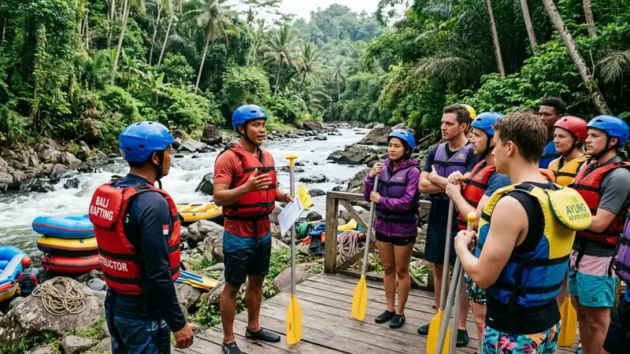

Tips memilih operator rafting Malang yang aman meliputi memastikan instruktur bersertifikat, perlengkapan keselamatan layak pakai, dan reputasi operator dapat ditelusuri melalui ulasan wisatawan.
- Operator tepercaya umumnya memiliki instruktur bersertifikasi resmi di bidang arung jeram.
- Kondisi perlengkapan keselamatan seperti pelampung dan helm perlu dipastikan layak pakai.
- Safety briefing sebelum kegiatan menjadi indikator penting operator yang mengutamakan keselamatan.
- Ulasan dan rekomendasi dari wisatawan sebelumnya dapat membantu menilai reputasi operator.
Memilih operator rafting yang tepat menjadi langkah penting sebelum mengikuti kegiatan arung jeram, mengingat aspek keselamatan sangat bergantung pada standar operasional yang diterapkan masing-masing operator. Wisatawan disarankan meluangkan waktu untuk membandingkan beberapa operator sebelum memutuskan melakukan reservasi.
Bagaimana Ciri Operator Rafting yang Aman di Malang
Ciri operator rafting yang aman di Malang antara lain memberikan safety briefing sebelum kegiatan dimulai, menyediakan perlengkapan keselamatan dalam kondisi baik, dan menempatkan instruktur pendamping di setiap perahu.
Operator yang mengutamakan keselamatan biasanya juga memiliki prosedur evakuasi yang jelas apabila terjadi situasi darurat selama kegiatan berlangsung. Transparansi mengenai risiko kegiatan serta kondisi sungai terkini turut menjadi indikator operator yang menjalankan standar operasional dengan baik.
Apa Saja yang Perlu Diperhatikan Saat Safety Briefing
Saat safety briefing, peserta perlu memperhatikan instruksi mengenai posisi duduk di perahu, cara menggunakan dayung dengan benar, serta langkah yang harus dilakukan apabila terjatuh dari perahu. Instruktur biasanya juga menjelaskan kode aba-aba yang akan digunakan selama perjalanan agar peserta dapat merespons dengan cepat dan tepat.
Mengapa Sertifikasi Instruktur Penting
Sertifikasi instruktur penting karena menunjukkan bahwa instruktur telah melalui pelatihan resmi terkait teknik dayung, penanganan situasi darurat, dan prosedur keselamatan di sungai.
Instruktur bersertifikat umumnya lebih memahami karakter jeram dan potensi risiko di sepanjang rute, sehingga dapat mengambil keputusan yang tepat apabila kondisi sungai berubah secara mendadak. Keberadaan instruktur bersertifikat di setiap perahu juga memberikan rasa aman tambahan bagi peserta, terutama bagi yang baru pertama kali mengikuti rafting.
Bagaimana Cara Memastikan Instruktur Rafting Bersertifikat
Cara memastikan instruktur rafting bersertifikat adalah dengan menanyakan langsung kepada pihak operator mengenai latar belakang pelatihan instruktur, atau melihat informasi sertifikasi yang biasanya dicantumkan pada situs resmi maupun media sosial operator. Wisatawan juga dapat memperhatikan ulasan dari peserta sebelumnya yang sering menyinggung profesionalisme instruktur selama kegiatan berlangsung.
Apa yang Perlu Ditanyakan Sebelum Memesan Paket Rafting
Sebelum memesan paket rafting, wisatawan sebaiknya menanyakan kondisi terkini perlengkapan keselamatan, rasio instruktur dengan jumlah peserta per perahu, serta prosedur yang diterapkan apabila cuaca tidak mendukung kegiatan.
Informasi mengenai kebijakan pembatalan atau penjadwalan ulang juga penting ditanyakan, mengingat kondisi sungai dapat berubah sewaktu-waktu akibat cuaca. Menanyakan hal-hal tersebut sejak awal dapat membantu wisatawan menghindari kekecewaan maupun risiko keselamatan yang tidak diinginkan.
Apakah Ulasan Wisatawan Penting Sebelum Memilih Operator
Ulasan wisatawan sebelumnya cukup penting untuk dipertimbangkan karena dapat memberikan gambaran nyata mengenai pengalaman, profesionalisme instruktur, dan kondisi perlengkapan yang digunakan operator tertentu. Ulasan yang konsisten positif dari berbagai sumber biasanya menjadi indikator operator yang menjaga standar layanan secara berkelanjutan.
FAQ
Bagaimana cara mengetahui operator rafting Malang sudah bersertifikat?
Wisatawan dapat menanyakan langsung kepada operator mengenai latar belakang sertifikasi instruktur atau memeriksa informasi tersebut melalui situs resmi dan media sosial operator.
Apakah safety briefing wajib dilakukan sebelum rafting?
Safety briefing umumnya menjadi bagian standar sebelum kegiatan rafting dimulai sebagai langkah penting memastikan keselamatan peserta.
Apa yang harus dilakukan jika ragu dengan keamanan suatu operator?
Sebaiknya wisatawan mencari operator lain yang lebih transparan mengenai sertifikasi instruktur dan kondisi perlengkapan keselamatannya.
Arya
Penulis artikel yang sudah berpengalaman di dalam dunia wisata outbound Batu Malang.